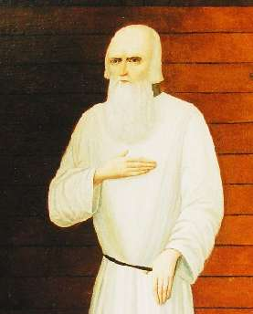

ЗАМЫСЛИЛ Я ПОБЕГ
Годовщина смерти Александра I в Таганроге (1825). А может быть, и не смерти, а начала новой жизни этого во многих отношениях удивительного человека.
Предлагаю верить в лучшее: что царь не умер, а скрылся от всех, превратился в старца Федора Кузьмича и много лет потом прожил праведным отшельником. Известно, что Александр Павлович мечтал об уединенных лесах и избавлении от власти с юного возраста.
Конечно, это почти наверняка всего лишь легенда, но очень уж красивая. Льву Николаевичу Толстому она очень нравилась, он даже начал писать повесть «Посмертные записки Федора Кузьмича, умершего 20 января 1864 года в Сибири, близ города Томска на заимке купца Хромова».
А что если всё произошло, как предполагает Толстой?
Царь решил «уйти так, чтобы никто не знал и чтобы пострадать». «Притвориться больным, умирающим и, подговорив и подкупив доктора, положить на мое место умирающего Струменского [запоротого шпицрутенами солдата] и самому уйти, бежать, скрыв от всех свое имя». Это был бы поступок порадикальней, чем недавно поминавшееся в нашем календаре отречение Диоклетиана, променявшего трон на выращивание капусты.
В годовщину зарождения легенды о старце Федоре Кузьмиче желаю вам стать царем или царицей в том царстве, которое вам нужно, править там столько, сколько захочется, а напоследок уйти спасать душу в какую-нибудь обитель дальную трудов и чистых нег.